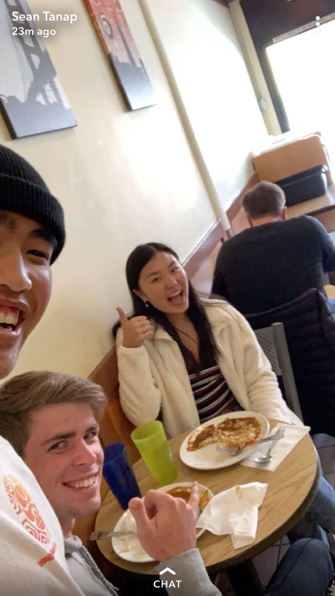
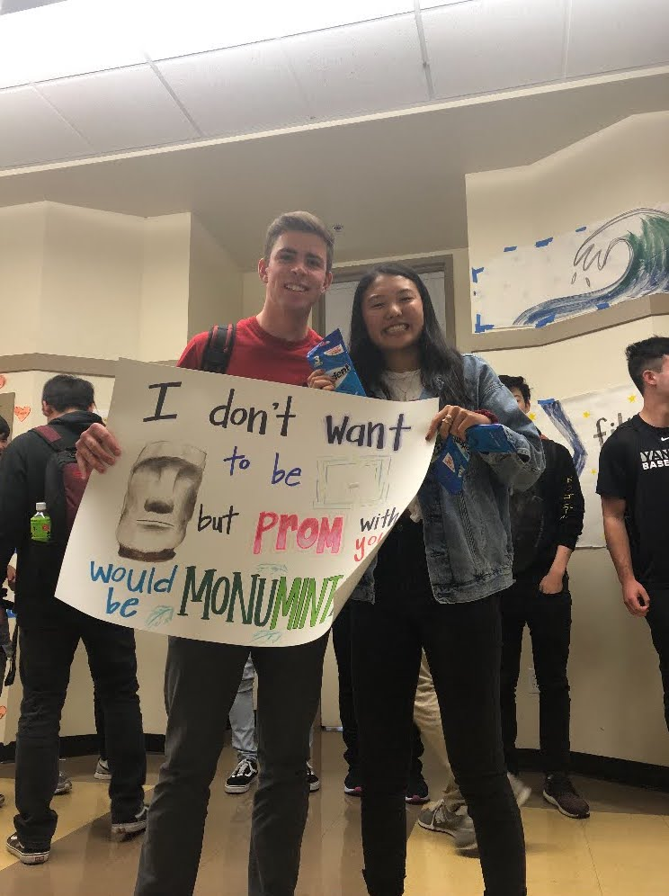

6/20/2020
"The drive in movies!! We have gone to the drive in theater I think three times in total! I do
not remember if the first time was the hide and seek one or the one where they are hunting
conservatives, but either way I remember it being really cozy and us eating lots of snacks! The
most recent time we went to see Spider-Man and it was super cringe hahaha."
Love you dearest!!
Love you dearest!!

5/25/2020
"Our iconic Ocean Beach day where I first taught you how to skimboard! We have had many days like
this but do not usually have my mom as our own personal photographer haha. I was watching back
the videos and you were a natural! I forgot how good you were because you haven't done it so much
recently, and have told me that you're bad at it so many times I was starting to believe you. But
you're really good! Right around this time we were regularly enjoying a lot of Tiger King
together which we would watch on your phone in the back of the car! This was a routine that I really
looked forward to doing with you!"
Love you my athletic queen!!!
Love you my athletic queen!!!

3/23/2020
"The start of COVID, we worked on painting the spikeball rims together quite a bit and you did a
really good job of cutting out the stencils when my glizzy fingers couldn't! Unfortunately (or
fortunately) COVID decided not to end for awhile. I don't really know what we were doing in the
picture on the left haha but we did some temporary tattoos and look super sped ahhaha! I think
your tattoo was an angel fish!"
Love you stithy mc stitherton!!!
Love you stithy mc stitherton!!!

3/9/2020
"Trip to Santa Monica! I think this was the time we skated there and we happened upon the LA
marathon, which was great because we got to have the street to ourselves without any cars on it! I think you
were riding Jonathan's penny board, and I remember at one part you started going really fast
downhill and getting speed wobbles. I was very concerned and was convinced you were going down,
but you managed to stay on your feet! Then of course I skated past a big dog which jumped at me and
I fell right over hahaha."
Love you my darllll!!!
Love you my darllll!!!

7/26/2019
"We filmed a video of ourselves eating spicy burritos! Idk where we got the burritos from or why
we decided to do this haha. Also the picture of you handing me the glass of milk like a saint is
amazing! I think on this day we also ate some of the peppers from my backyard and I died after eating
some thai pepper."
Love you my lovely!!!
Love you my lovely!!!

7/17/2019
"Fun hike just North of the Golden Gate Bridge. I think this was the first hike we went on
together! I remember we didn't really know where we were going but just walked along
multiple paths until we had had enough which I think has been a theme for our hikes haha.
You look really cute wearing my sweatshirt here!"
Love you STINKER!!!
Love you STINKER!!!

5/31/2019
"Wowwww graduation!!! The ceremony wasn't the most exciting but in the evening we went to
the Santa Cruz Boardwalk and spent lots of time together! I remember playing the pirates
minigolf with you and then playing arcade games like air hockey! I think we also went on
a few rides together! Might be due for some more minigolf soon??"
Love you dearrrrr!!!
Love you dearrrrr!!!

5/29/2019
"Volcano Curry!! So yummy!!! We went here a couple times and you got the medium spicy and
I got the very spicy because I was a masochist who was trying to prove his spice tolerance.
One of the times we were here we bumped into Sean which was super random! Also what happened
to the sweater you're wearing here it's really cute!?"
Love you BEAAANSSS!!!
Love you BEAAANSSS!!!

5/22/2019
"San Mateo High School college flex day! We had gone on a couple dates at this point and
were starting to get to know each other better. This includes our iconic first date to go
see Us followed by pho at Saigon City which became a classic for us! I remember for our
first date I prepared a list of conversation topics so that I would make sure we didn't run
out of things to talk about haha. Also you look really cute in your little orange hat!"
Love you dolly olly olly!!!
Love you dolly olly olly!!!

4/12/2019
"Look at us we're so cute! I remember it being really awkward at the Baba's house because
all of the parents were watching us haha. Then at prom the DJing wasn't very good and we
only danced together a little bit, but now we dance together all the time! Also I am a big
fan of the pink so good job picking that color dear!"
Love you my sweet sweet sweet muffins!!!
Love you my sweet sweet sweet muffins!!!

4/8/2019
"Where it all started! I remember feeling really nervous to ask you out to prom even though
we had agreed to go beforehand! We were so cute and awkward around each other! I also
remember talking to you about going to prom and how I thought you were really cool! This
was the start of our journey to falling in love!"
Love you dear aka dolly aka stu aka honey bunches of oats aka stithy!!!
Love you dear aka dolly aka stu aka honey bunches of oats aka stithy!!!